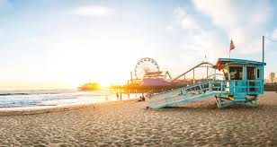
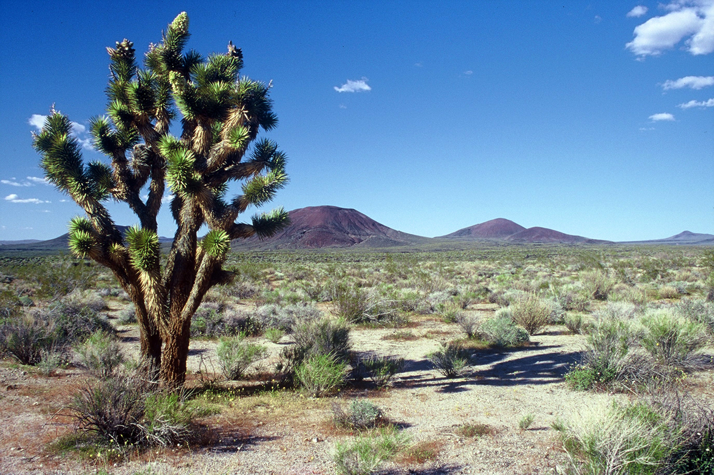
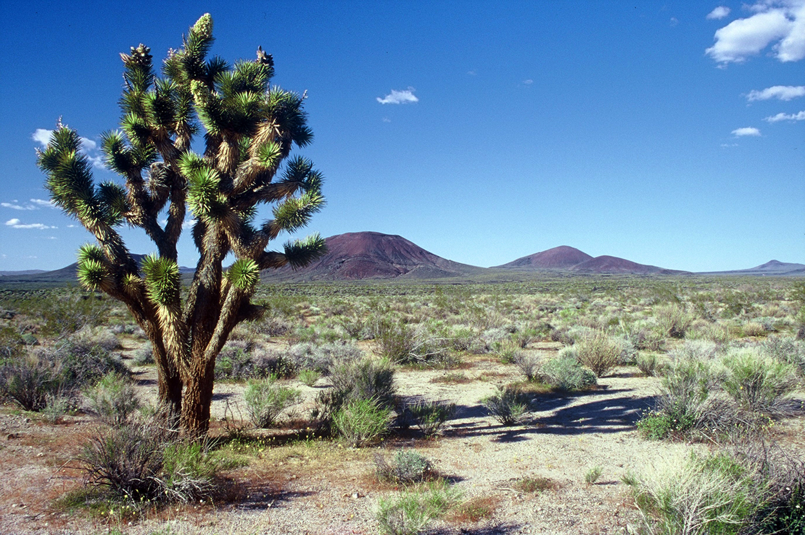

Multimédia
Fotografias
Aqui estão algumas fotografias emblemáticas da Califórnia, um estado localizado na costa oeste dos Estados Unidos.

 

Vídeo
viajem
Califórnia Sonhos
por joão Rijo
Califórnia, terra de sonhos,
onde o sol brilha forte e quente,
onde as praias são de ouro,
e as montanhas são de cristal.